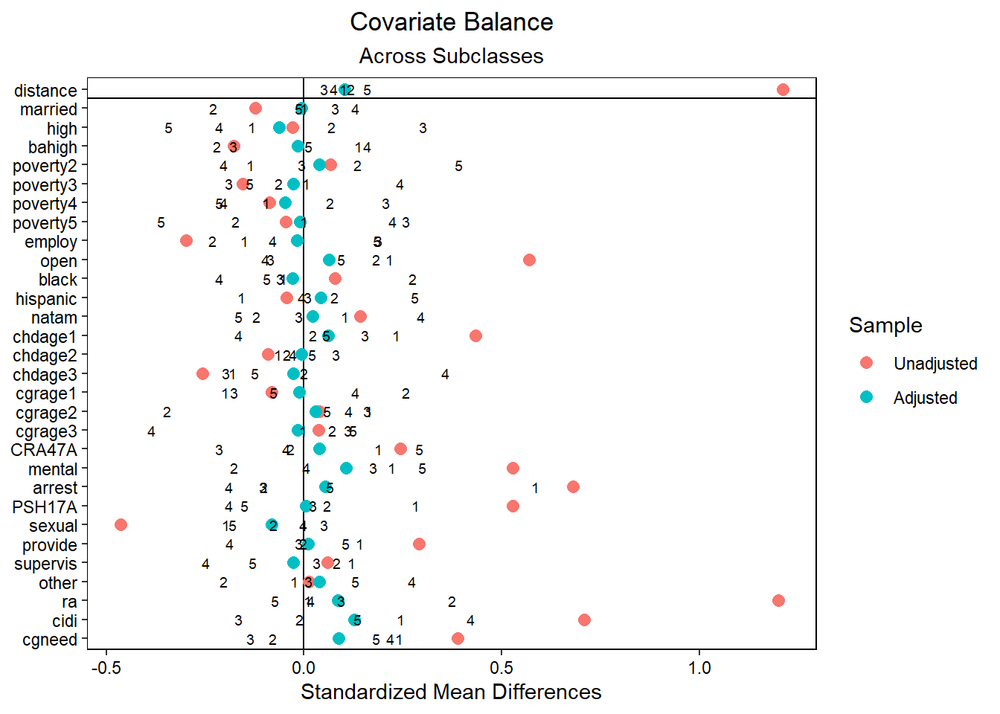

9 Section 6.5.2 Subclassification & Cox Proportional Hazards (PS)
library(tidyverse)
library(haven)
library(MatchIt)
library(cobalt)
library(sjlabelled)
library(broom)
library(survival)
library(PSweight)
options(scipen=999)9.1 Import Data
df <- read_dta("data/Data_Chapter6/sur_subclass.dta") %>%
zap_formats()
df <- sjlabelled::remove_all_labels(df) %>%
as_tibble()9.2 Create Propensity Score Using Logistic
cov <- "married + high + bahigh + poverty2 + poverty3 + poverty4 + poverty5 + employ + open + black + hispanic + natam + chdage1 + chdage2 + chdage3 + cgrage1 + cgrage2 + cgrage3 + CRA47A + mental + arrest + PSH17A + sexual + provide + supervis + other + ra + cidi + cgneed"
f <- as.formula(paste("aodserv ~", cov))
m1 <- glm(aodserv ~ married + high + bahigh + poverty2 + poverty3 +
poverty4 + poverty5 + employ + open + black + hispanic + natam + chdage1 +
chdage2 + chdage3 + cgrage1 + cgrage2 + cgrage3 + CRA47A + mental +
arrest + PSH17A + sexual + provide + supervis + other + ra + cidi + cgneed,
family = binomial,
data = df)
ps3 <- predict(m1, type = "response")
sur_subclass1 <- df
sur_subclass1$ps3 <- ps39.3 Function to Conduct Balance Check Using Normalized Difference
nd <- function(cov, df = sur_subclass1, tx = "aodserv") {
tx <- as.name(tx)
cov <- as.name(cov)
df <- df %>%
group_by(!!tx) %>%
summarize(m = mean(!!cov, na.rm = T),
s = sd(!!cov, na.rm = T),
.groups = "drop") %>%
pivot_wider(names_from = !!tx, values_from = c("m", "s"), names_sep = "") %>%
mutate(nd = (m1-m0)/sqrt(s1^2+s0^2))
return(df$nd)
}9.4 Balance Check on the Original Sample (Normalized Difference)
covs <- str_split(cov, "\\s[+]\\s")[[1]] # vector of covariates
sapply(covs, nd) # apply the function nd on each covariate## married high bahigh poverty2 poverty3 poverty4
## -0.083782572 -0.020944688 -0.117467895 0.047519781 -0.101591707 -0.058597578
## poverty5 employ open black hispanic natam
## -0.031356128 -0.206390823 0.365698430 0.056512656 -0.030820121 0.113101585
## chdage1 chdage2 chdage3 cgrage1 cgrage2 cgrage3
## 0.317144130 -0.061307219 -0.168353683 -0.058741019 0.028058160 0.026894624
## CRA47A mental arrest PSH17A sexual provide
## 0.178218682 0.400231469 0.492396125 0.457862846 -0.236493710 0.221219159
## supervis other ra cidi cgneed
## 0.043210479 0.008817453 0.996042062 0.529662472 0.3548427559.5 Function to Check Balance Using Chi-Square Tests
check_blc <- function(cov, df = sur_subclass1, tx = "aodserv") {
ct <- tidy(
chisq.test(
table(df[[cov]], y = df[[tx]]), correct =F
)
) %>%
add_column(cov = cov, .before = "statistic") %>%
mutate(p.value = round(p.value, 2))
return(ct)
}9.6 Balance Check on the Original Sample (Chi-Square)
covs2 <- c("married", "educ", "pov", "employ", "open", "race", "chdage",
"cgage", "CRA47A", "mental", "arrest", "PSH17A", "maltx", "ra",
"cidi", "cgneed")
map_dfr(covs2, check_blc)## # A tibble: 16 x 5
## cov statistic p.value parameter method
## <chr> <dbl> <dbl> <int> <chr>
## 1 married 3.52 0.06 1 Pearson's Chi-squared test
## 2 educ 10.2 0.01 2 Pearson's Chi-squared test
## 3 pov 11.2 0.02 4 Pearson's Chi-squared test
## 4 employ 21.5 0 1 Pearson's Chi-squared test
## 5 open 60.6 0 1 Pearson's Chi-squared test
## 6 race 11.6 0.01 3 Pearson's Chi-squared test
## 7 chdage 56.0 0 3 Pearson's Chi-squared test
## 8 cgage 4.00 0.26 3 Pearson's Chi-squared test
## 9 CRA47A 17.7 0 1 Pearson's Chi-squared test
## 10 mental 92.4 0 1 Pearson's Chi-squared test
## 11 arrest 127. 0 1 Pearson's Chi-squared test
## 12 PSH17A 171. 0 1 Pearson's Chi-squared test
## 13 maltx 47.9 0 4 Pearson's Chi-squared test
## 14 ra 584. 0 1 Pearson's Chi-squared test
## 15 cidi 154. 0 1 Pearson's Chi-squared test
## 16 cgneed 134. 0 1 Pearson's Chi-squared test9.7 Get Quintiles
q5 <- c(0, round(quantile(sur_subclass1$ps3, c(.2, .4, .6, .8), type = 1), 7), 1) # round to 7 digits to replicate Stata code
q5## 20% 40% 60% 80%
## 0.0000000 0.0121536 0.0216452 0.0440495 0.1421116 1.00000009.8 Create 5 Subclasses Using Quintiles
# Cut 5 subclasses
subs <- sur_subclass1 %>%
arrange(ps3) %>%
group_by(q = cut(ps3,
include.lowest = F,
right = F,
dig.lab = 7,
breaks = q5,
labels = F))
# Summary statistics of ps3 per subclass
subs %>%
group_by(q) %>%
summarise(obs = n(),
mean = mean(ps3),
sd = sd(ps3),
min = min(ps3),
max = max(ps3), .groups = "drop")## # A tibble: 5 x 6
## q obs mean sd min max
## <int> <int> <dbl> <dbl> <dbl> <dbl>
## 1 1 545 0.00813 0.00237 0.00263 0.0122
## 2 2 545 0.0165 0.00271 0.0122 0.0216
## 3 3 543 0.0308 0.00600 0.0217 0.0439
## 4 4 546 0.0758 0.0264 0.0440 0.142
## 5 5 544 0.409 0.215 0.143 0.951# Filter each subclass into its own tibble
sub1 <- subs %>% filter(q == 1)
sub2 <- subs %>% filter(q == 2)
sub3 <- subs %>% filter(q == 3)
sub4 <- subs %>% filter(q == 4)
sub5 <- subs %>% filter(q == 5)9.9 Check Imbalance Post-Subclassification (5 Subclasses)
map_dfr(covs2, check_blc, df = sub1)## # A tibble: 16 x 5
## cov statistic p.value parameter method
## <chr> <dbl> <dbl> <dbl> <chr>
## 1 married 0.506 0.48 1 Pearson's Chi-squared test
## 2 educ 0.955 0.62 2 Pearson's Chi-squared test
## 3 pov 2.35 0.67 4 Pearson's Chi-squared test
## 4 employ 0.478 0.49 1 Pearson's Chi-squared test
## 5 open 2.69 0.1 1 Pearson's Chi-squared test
## 6 race 0.673 0.88 3 Pearson's Chi-squared test
## 7 chdage 2.31 0.51 3 Pearson's Chi-squared test
## 8 cgage 3.59 0.17 2 Pearson's Chi-squared test
## 9 CRA47A 0.211 0.65 1 Pearson's Chi-squared test
## 10 mental 0.0303 0.86 1 Pearson's Chi-squared test
## 11 arrest 0.0402 0.84 1 Pearson's Chi-squared test
## 12 PSH17A 0.00741 0.93 1 Pearson's Chi-squared test
## 13 maltx 2.39 0.66 4 Pearson's Chi-squared test
## 14 ra 541. 0 1 Chi-squared test for given probabilities
## 15 cidi 0.0323 0.86 1 Pearson's Chi-squared test
## 16 cgneed 541. 0 1 Chi-squared test for given probabilitiesmap_dfr(covs2, check_blc, df = sub2)## # A tibble: 16 x 5
## cov statistic p.value parameter method
## <chr> <dbl> <dbl> <dbl> <chr>
## 1 married 0.749 0.39 1 Pearson's Chi-squared test
## 2 educ 2.12 0.35 2 Pearson's Chi-squared test
## 3 pov 1.77 0.78 4 Pearson's Chi-squared test
## 4 employ 3.02 0.08 1 Pearson's Chi-squared test
## 5 open 2.21 0.14 1 Pearson's Chi-squared test
## 6 race 4.68 0.2 3 Pearson's Chi-squared test
## 7 chdage 5.67 0.13 3 Pearson's Chi-squared test
## 8 cgage 0.832 0.84 3 Pearson's Chi-squared test
## 9 CRA47A 1.81 0.18 1 Pearson's Chi-squared test
## 10 mental 1.03 0.31 1 Pearson's Chi-squared test
## 11 arrest 0.000198 0.99 1 Pearson's Chi-squared test
## 12 PSH17A 0.0789 0.78 1 Pearson's Chi-squared test
## 13 maltx 2.24 0.69 4 Pearson's Chi-squared test
## 14 ra 521. 0 1 Chi-squared test for given probabilities
## 15 cidi 0.250 0.62 1 Pearson's Chi-squared test
## 16 cgneed 44.1 0 1 Pearson's Chi-squared testmap_dfr(covs2, check_blc, df = sub3)## # A tibble: 16 x 5
## cov statistic p.value parameter method
## <chr> <dbl> <dbl> <int> <chr>
## 1 married 0.147 0.7 1 Pearson's Chi-squared test
## 2 educ 2.85 0.24 2 Pearson's Chi-squared test
## 3 pov 1.41 0.84 4 Pearson's Chi-squared test
## 4 employ 1.93 0.17 1 Pearson's Chi-squared test
## 5 open 0.260 0.61 1 Pearson's Chi-squared test
## 6 race 3.90 0.27 3 Pearson's Chi-squared test
## 7 chdage 1.07 0.78 3 Pearson's Chi-squared test
## 8 cgage 3.15 0.37 3 Pearson's Chi-squared test
## 9 CRA47A 0.428 0.51 1 Pearson's Chi-squared test
## 10 mental 0.447 0.5 1 Pearson's Chi-squared test
## 11 arrest 0.00553 0.94 1 Pearson's Chi-squared test
## 12 PSH17A 10.5 0 1 Pearson's Chi-squared test
## 13 maltx 3.94 0.41 4 Pearson's Chi-squared test
## 14 ra 0.107 0.74 1 Pearson's Chi-squared test
## 15 cidi 0.835 0.36 1 Pearson's Chi-squared test
## 16 cgneed 3.18 0.07 1 Pearson's Chi-squared testmap_dfr(covs2, check_blc, df = sub4)## # A tibble: 16 x 5
## cov statistic p.value parameter method
## <chr> <dbl> <dbl> <int> <chr>
## 1 married 0.474 0.49 1 Pearson's Chi-squared test
## 2 educ 3.22 0.2 2 Pearson's Chi-squared test
## 3 pov 5.56 0.23 4 Pearson's Chi-squared test
## 4 employ 0.495 0.48 1 Pearson's Chi-squared test
## 5 open 1.12 0.29 1 Pearson's Chi-squared test
## 6 race 0.315 0.96 3 Pearson's Chi-squared test
## 7 chdage 0.725 0.87 3 Pearson's Chi-squared test
## 8 cgage 0.299 0.96 3 Pearson's Chi-squared test
## 9 CRA47A 0.466 0.49 1 Pearson's Chi-squared test
## 10 mental 0.000123 0.99 1 Pearson's Chi-squared test
## 11 arrest 3.57 0.06 1 Pearson's Chi-squared test
## 12 PSH17A 1.95 0.16 1 Pearson's Chi-squared test
## 13 maltx 1.25 0.87 4 Pearson's Chi-squared test
## 14 ra 0.108 0.74 1 Pearson's Chi-squared test
## 15 cidi 0.141 0.71 1 Pearson's Chi-squared test
## 16 cgneed 4.11 0.04 1 Pearson's Chi-squared testmap_dfr(covs2, check_blc, df = sub5)## # A tibble: 16 x 5
## cov statistic p.value parameter method
## <chr> <dbl> <dbl> <int> <chr>
## 1 married 0.160 0.69 1 Pearson's Chi-squared test
## 2 educ 2.66 0.26 2 Pearson's Chi-squared test
## 3 pov 1.57 0.81 4 Pearson's Chi-squared test
## 4 employ 0.623 0.43 1 Pearson's Chi-squared test
## 5 open 5.30 0.02 1 Pearson's Chi-squared test
## 6 race 1.98 0.58 3 Pearson's Chi-squared test
## 7 chdage 2.88 0.41 3 Pearson's Chi-squared test
## 8 cgage 0.848 0.84 3 Pearson's Chi-squared test
## 9 CRA47A 0.203 0.65 1 Pearson's Chi-squared test
## 10 mental 3.86 0.05 1 Pearson's Chi-squared test
## 11 arrest 0.244 0.62 1 Pearson's Chi-squared test
## 12 PSH17A 3.19 0.07 1 Pearson's Chi-squared test
## 13 maltx 2.79 0.59 4 Pearson's Chi-squared test
## 14 ra 19.8 0 1 Pearson's Chi-squared test
## 15 cidi 9.98 0 1 Pearson's Chi-squared test
## 16 cgneed 4.47 0.03 1 Pearson's Chi-squared test9.10 Trimming: Search for Best Cutoff Alpha for Overlap
# Program to search best cutoff value alpha for overlap (Crum et al., 2009)
trim <- PSweight::PStrim(
data = as.data.frame(sur_subclass1), # fix for latest package update
ps.formula = f,
optimal = T
)
trim$delta # or use .079 from the Stata results## [1] 0.078025861-trim$delta # or use .921 from the Stata results## [1] 0.92197419.11 Trim Observations
summary(sur_subclass1$ps3)## Min. 1st Qu. Median Mean 3rd Qu. Max.
## 0.002628 0.014190 0.029990 0.107969 0.093391 0.950519sur_subclass2 <- sur_subclass1 %>%
filter(ps3 >= .079 & ps3 <= .921)
summary(sur_subclass2$ps3)## Min. 1st Qu. Median Mean 3rd Qu. Max.
## 0.07916 0.13539 0.24566 0.32245 0.47885 0.909179.12 Create 5 New Subclasses and Check Imbalance
# Cut 5 subclasses (Type 2 and 5 in Quantile() are identical to Stata results)
subs_t <- sur_subclass2 %>%
arrange(ps3) %>%
group_by(q = cut(ps3,
include.lowest = F,
right = F,
dig.lab = 7,
breaks = c(0, round(quantile(sur_subclass2$ps3,
c(.2, .4, .6, .8), type = 2), 7), 2),
labels = F))
# Summary statistics of ps3 per subclass
subs_t %>%
group_by(q) %>%
summarise(obs = n(),
mean = mean(ps3),
sd = sd(ps3),
min = min(ps3),
max = max(ps3), .groups = "drop")## # A tibble: 5 x 6
## q obs mean sd min max
## <int> <int> <dbl> <dbl> <dbl> <dbl>
## 1 1 149 0.0959 0.0102 0.0792 0.115
## 2 2 149 0.151 0.0212 0.115 0.190
## 3 3 149 0.249 0.0386 0.190 0.317
## 4 4 149 0.422 0.0675 0.318 0.546
## 5 5 149 0.694 0.102 0.549 0.909# Filter each subclass into its own tibble
sub1_t <- subs_t %>% filter(q == 1)
sub2_t <- subs_t %>% filter(q == 2)
sub3_t <- subs_t %>% filter(q == 3)
sub4_t <- subs_t %>% filter(q == 4)
sub5_t <- subs_t %>% filter(q == 5)
# Check imbalance
map_dfr(covs2, check_blc, df = sub1_t)## # A tibble: 16 x 5
## cov statistic p.value parameter method
## <chr> <dbl> <dbl> <int> <chr>
## 1 married 3.55 0.06 1 Pearson's Chi-squared test
## 2 educ 3.05 0.22 2 Pearson's Chi-squared test
## 3 pov 2.80 0.59 4 Pearson's Chi-squared test
## 4 employ 0.697 0.4 1 Pearson's Chi-squared test
## 5 open 1.28 0.26 1 Pearson's Chi-squared test
## 6 race 1.50 0.68 3 Pearson's Chi-squared test
## 7 chdage 11.6 0.01 3 Pearson's Chi-squared test
## 8 cgage 0.346 0.95 3 Pearson's Chi-squared test
## 9 CRA47A 0.158 0.69 1 Pearson's Chi-squared test
## 10 mental 0.119 0.73 1 Pearson's Chi-squared test
## 11 arrest 0.0235 0.88 1 Pearson's Chi-squared test
## 12 PSH17A 1.14 0.29 1 Pearson's Chi-squared test
## 13 maltx 1.52 0.82 4 Pearson's Chi-squared test
## 14 ra 0.146 0.7 1 Pearson's Chi-squared test
## 15 cidi 0.00627 0.94 1 Pearson's Chi-squared test
## 16 cgneed 0.810 0.37 1 Pearson's Chi-squared testmap_dfr(covs2, check_blc, df = sub2_t)## # A tibble: 16 x 5
## cov statistic p.value parameter method
## <chr> <dbl> <dbl> <int> <chr>
## 1 married 1.15 0.28 1 Pearson's Chi-squared test
## 2 educ 3.50 0.17 2 Pearson's Chi-squared test
## 3 pov 1.45 0.84 4 Pearson's Chi-squared test
## 4 employ 0.882 0.35 1 Pearson's Chi-squared test
## 5 open 2.79 0.1 1 Pearson's Chi-squared test
## 6 race 0.320 0.96 3 Pearson's Chi-squared test
## 7 chdage 1.45 0.69 3 Pearson's Chi-squared test
## 8 cgage 5.59 0.13 3 Pearson's Chi-squared test
## 9 CRA47A 0.00630 0.94 1 Pearson's Chi-squared test
## 10 mental 0.276 0.6 1 Pearson's Chi-squared test
## 11 arrest 3.07 0.08 1 Pearson's Chi-squared test
## 12 PSH17A 0.903 0.34 1 Pearson's Chi-squared test
## 13 maltx 3.60 0.46 4 Pearson's Chi-squared test
## 14 ra 0.0639 0.8 1 Pearson's Chi-squared test
## 15 cidi 0.563 0.45 1 Pearson's Chi-squared test
## 16 cgneed 0.00555 0.94 1 Pearson's Chi-squared testmap_dfr(covs2, check_blc, df = sub3_t)## # A tibble: 16 x 5
## cov statistic p.value parameter method
## <chr> <dbl> <dbl> <int> <chr>
## 1 married 0.0707 0.79 1 Pearson's Chi-squared test
## 2 educ 5.38 0.07 2 Pearson's Chi-squared test
## 3 pov 14.5 0.01 4 Pearson's Chi-squared test
## 4 employ 1.15 0.28 1 Pearson's Chi-squared test
## 5 open 0.0195 0.89 1 Pearson's Chi-squared test
## 6 race 1.05 0.79 3 Pearson's Chi-squared test
## 7 chdage 1.11 0.77 3 Pearson's Chi-squared test
## 8 cgage 0.0411 1 3 Pearson's Chi-squared test
## 9 CRA47A 0.00458 0.95 1 Pearson's Chi-squared test
## 10 mental 1.37 0.24 1 Pearson's Chi-squared test
## 11 arrest 3.34 0.07 1 Pearson's Chi-squared test
## 12 PSH17A 0.0215 0.88 1 Pearson's Chi-squared test
## 13 maltx 2.30 0.68 4 Pearson's Chi-squared test
## 14 ra 1.30 0.25 1 Pearson's Chi-squared test
## 15 cidi 1.02 0.31 1 Pearson's Chi-squared test
## 16 cgneed 0.103 0.75 1 Pearson's Chi-squared testmap_dfr(covs2, check_blc, df = sub4_t)## # A tibble: 16 x 5
## cov statistic p.value parameter method
## <chr> <dbl> <dbl> <int> <chr>
## 1 married 0.381 0.54 1 Pearson's Chi-squared test
## 2 educ 4.39 0.11 2 Pearson's Chi-squared test
## 3 pov 6.41 0.17 4 Pearson's Chi-squared test
## 4 employ 0.475 0.49 1 Pearson's Chi-squared test
## 5 open 0.136 0.71 1 Pearson's Chi-squared test
## 6 race 0.471 0.93 3 Pearson's Chi-squared test
## 7 chdage 0.640 0.89 3 Pearson's Chi-squared test
## 8 cgage 0.196 0.98 3 Pearson's Chi-squared test
## 9 CRA47A 1.84 0.18 1 Pearson's Chi-squared test
## 10 mental 2.93 0.09 1 Pearson's Chi-squared test
## 11 arrest 0.147 0.7 1 Pearson's Chi-squared test
## 12 PSH17A 0.134 0.71 1 Pearson's Chi-squared test
## 13 maltx 1.60 0.81 4 Pearson's Chi-squared test
## 14 ra 1.00 0.32 1 Pearson's Chi-squared test
## 15 cidi 0.0107 0.92 1 Pearson's Chi-squared test
## 16 cgneed 3.79 0.05 1 Pearson's Chi-squared testmap_dfr(covs2, check_blc, df = sub5_t)## # A tibble: 16 x 5
## cov statistic p.value parameter method
## <chr> <dbl> <dbl> <int> <chr>
## 1 married 0.766 0.38 1 Pearson's Chi-squared test
## 2 educ 3.03 0.22 2 Pearson's Chi-squared test
## 3 pov 1.35 0.85 4 Pearson's Chi-squared test
## 4 employ 0.335 0.56 1 Pearson's Chi-squared test
## 5 open 0.105 0.75 1 Pearson's Chi-squared test
## 6 race 3.13 0.37 3 Pearson's Chi-squared test
## 7 chdage 1.70 0.64 3 Pearson's Chi-squared test
## 8 cgage 1.02 0.8 3 Pearson's Chi-squared test
## 9 CRA47A 0.698 0.4 1 Pearson's Chi-squared test
## 10 mental 0.108 0.74 1 Pearson's Chi-squared test
## 11 arrest 1.15 0.28 1 Pearson's Chi-squared test
## 12 PSH17A 0.332 0.56 1 Pearson's Chi-squared test
## 13 maltx 5.93 0.2 4 Pearson's Chi-squared test
## 14 ra 0.116 0.73 1 Pearson's Chi-squared test
## 15 cidi 4.26 0.04 1 Pearson's Chi-squared test
## 16 cgneed 2.54 0.11 1 Pearson's Chi-squared test9.13 Outcome Analysis by Subclass
f2 <- as.formula("Surv(durm, rrpt) ~ aodserv + married + high + bahigh + poverty2 + poverty3 + poverty4 + poverty5 + employ + open + black + hispanic + natam + chdage1 + chdage2 + chdage3 + CRA47A")
tidy(survival::coxph(f2, sub1_t))## # A tibble: 17 x 5
## term estimate std.error statistic p.value
## <chr> <dbl> <dbl> <dbl> <dbl>
## 1 aodserv 1.28 0.523 2.45 0.0143
## 2 married 0.0453 0.435 0.104 0.917
## 3 high -0.223 0.450 -0.496 0.620
## 4 bahigh -0.580 0.572 -1.01 0.310
## 5 poverty2 -0.245 0.488 -0.503 0.615
## 6 poverty3 0.748 0.535 1.40 0.162
## 7 poverty4 0.306 0.669 0.456 0.648
## 8 poverty5 -1.15 1.11 -1.03 0.301
## 9 employ 0.0966 0.414 0.233 0.816
## 10 open 0.339 0.520 0.652 0.515
## 11 black 0.428 0.465 0.921 0.357
## 12 hispanic 0.441 0.606 0.728 0.467
## 13 natam 0.372 0.625 0.595 0.552
## 14 chdage1 -1.40 0.551 -2.55 0.0109
## 15 chdage2 -1.19 0.763 -1.56 0.119
## 16 chdage3 -0.924 0.555 -1.67 0.0955
## 17 CRA47A 0.665 0.427 1.56 0.119tidy(survival::coxph(f2, sub2_t))## # A tibble: 17 x 5
## term estimate std.error statistic p.value
## <chr> <dbl> <dbl> <dbl> <dbl>
## 1 aodserv 0.0990 0.443 0.224 0.823
## 2 married -0.0473 0.403 -0.117 0.906
## 3 high 0.392 0.385 1.02 0.309
## 4 bahigh 0.489 0.500 0.979 0.328
## 5 poverty2 0.369 0.417 0.884 0.377
## 6 poverty3 -2.09 1.08 -1.92 0.0544
## 7 poverty4 0.0632 0.580 0.109 0.913
## 8 poverty5 -1.25 1.10 -1.14 0.256
## 9 employ 0.251 0.358 0.701 0.483
## 10 open -0.345 0.379 -0.910 0.363
## 11 black -0.123 0.496 -0.247 0.805
## 12 hispanic 0.307 0.456 0.672 0.501
## 13 natam 0.390 0.586 0.666 0.505
## 14 chdage1 -0.162 0.472 -0.343 0.732
## 15 chdage2 -0.544 0.657 -0.827 0.408
## 16 chdage3 0.342 0.555 0.616 0.538
## 17 CRA47A 0.00356 0.335 0.0106 0.992tidy(survival::coxph(f2, sub3_t))## # A tibble: 17 x 5
## term estimate std.error statistic p.value
## <chr> <dbl> <dbl> <dbl> <dbl>
## 1 aodserv -0.168 0.449 -0.375 0.708
## 2 married -0.800 0.561 -1.43 0.154
## 3 high -0.0488 0.452 -0.108 0.914
## 4 bahigh -0.188 0.570 -0.329 0.742
## 5 poverty2 0.0219 0.486 0.0451 0.964
## 6 poverty3 -0.309 0.692 -0.447 0.655
## 7 poverty4 -0.281 0.844 -0.332 0.740
## 8 poverty5 -0.586 0.702 -0.836 0.403
## 9 employ -0.341 0.443 -0.772 0.440
## 10 open 0.259 0.440 0.589 0.556
## 11 black -0.500 0.460 -1.09 0.277
## 12 hispanic -1.24 0.679 -1.82 0.0687
## 13 natam -0.118 0.735 -0.160 0.873
## 14 chdage1 -0.0163 0.504 -0.0324 0.974
## 15 chdage2 0.554 0.716 0.774 0.439
## 16 chdage3 -0.486 0.700 -0.694 0.488
## 17 CRA47A 0.664 0.382 1.74 0.0820tidy(survival::coxph(f2, sub4_t))## # A tibble: 17 x 5
## term estimate std.error statistic p.value
## <chr> <dbl> <dbl> <dbl> <dbl>
## 1 aodserv 0.245 0.377 0.649 0.516
## 2 married 0.694 0.428 1.62 0.105
## 3 high 0.512 0.426 1.20 0.230
## 4 bahigh -0.323 0.711 -0.454 0.650
## 5 poverty2 0.315 0.478 0.658 0.510
## 6 poverty3 -0.132 0.672 -0.196 0.844
## 7 poverty4 0.350 0.928 0.377 0.706
## 8 poverty5 -0.988 0.855 -1.16 0.248
## 9 employ -0.301 0.393 -0.767 0.443
## 10 open 0.361 0.484 0.746 0.456
## 11 black -0.0424 0.457 -0.0927 0.926
## 12 hispanic 0.0690 0.664 0.104 0.917
## 13 natam -1.66 1.07 -1.56 0.119
## 14 chdage1 -0.644 0.520 -1.24 0.216
## 15 chdage2 0.318 0.602 0.528 0.598
## 16 chdage3 -0.406 0.568 -0.715 0.474
## 17 CRA47A 0.569 0.402 1.42 0.157tidy(survival::coxph(f2, sub5_t))## # A tibble: 17 x 5
## term estimate std.error statistic p.value
## <chr> <dbl> <dbl> <dbl> <dbl>
## 1 aodserv 0.419 0.403 1.04 0.298
## 2 married 0.116 0.449 0.258 0.796
## 3 high -0.696 0.425 -1.64 0.101
## 4 bahigh -1.13 0.649 -1.74 0.0824
## 5 poverty2 0.910 0.402 2.27 0.0235
## 6 poverty3 -1.18 1.09 -1.09 0.276
## 7 poverty4 -0.609 0.818 -0.744 0.457
## 8 poverty5 0.0969 0.642 0.151 0.880
## 9 employ 0.127 0.405 0.313 0.755
## 10 open 0.492 0.638 0.772 0.440
## 11 black -1.07 0.466 -2.29 0.0220
## 12 hispanic -0.526 0.514 -1.02 0.306
## 13 natam -0.107 0.544 -0.197 0.844
## 14 chdage1 -0.407 0.665 -0.613 0.540
## 15 chdage2 0.872 0.694 1.26 0.209
## 16 chdage3 0.491 0.729 0.674 0.500
## 17 CRA47A 0.0749 0.359 0.209 0.8359.14 Aggregate Results
exp(0.37513328)## [1] 1.455185(1-pnorm(1.899353989))*2 # p = .05751795## [1] 0.05751795tidy(survival::coxph(f2, df))## # A tibble: 17 x 5
## term estimate std.error statistic p.value
## <chr> <dbl> <dbl> <dbl> <dbl>
## 1 aodserv 0.436 0.123 3.54 0.000404
## 2 married -0.200 0.105 -1.90 0.0570
## 3 high -0.217 0.100 -2.16 0.0305
## 4 bahigh -0.0187 0.125 -0.149 0.881
## 5 poverty2 -0.112 0.110 -1.02 0.308
## 6 poverty3 -0.331 0.143 -2.32 0.0203
## 7 poverty4 -0.453 0.174 -2.60 0.00922
## 8 poverty5 -0.649 0.183 -3.55 0.000391
## 9 employ -0.0660 0.0948 -0.696 0.487
## 10 open 0.201 0.0940 2.13 0.0329
## 11 black -0.248 0.109 -2.27 0.0231
## 12 hispanic -0.233 0.132 -1.77 0.0761
## 13 natam -0.0536 0.193 -0.279 0.781
## 14 chdage1 -0.352 0.125 -2.82 0.00473
## 15 chdage2 0.0579 0.137 0.422 0.673
## 16 chdage3 -0.104 0.123 -0.847 0.397
## 17 CRA47A 0.526 0.0921 5.71 0.00000001139.15 Subclassification with MatchIt
mm <- MatchIt::matchit(f, df, method = "subclass", subclass = 5)
love.plot(mm, binary = "std", disp.subclass = T)
bal.tab(mm, un = T, binary = "std", disp.subclass = T)## Call
## MatchIt::matchit(formula = f, data = df, method = "subclass",
## subclass = 5)
##
## Balance by subclass
## - - - Subclass 1 - - -
## Type Diff.Adj
## distance Distance 0.1004
## married Binary 0.0019
## high Binary -0.1296
## bahigh Binary 0.1385
## poverty2 Binary -0.1337
## poverty3 Binary 0.0069
## poverty4 Binary -0.0942
## poverty5 Binary 0.0016
## employ Binary -0.1496
## open Binary 0.2167
## black Binary -0.0522
## hispanic Binary -0.1573
## natam Binary 0.1054
## chdage1 Binary 0.2348
## chdage2 Binary -0.0648
## chdage3 Binary -0.1786
## cgrage1 Binary -0.1987
## cgrage2 Binary 0.1653
## cgrage3 Binary -0.0007
## CRA47A Binary 0.1883
## mental Binary 0.2233
## arrest Binary 0.5853
## PSH17A Binary 0.2839
## sexual Binary -0.1967
## provide Binary 0.1416
## supervis Binary 0.1216
## other Binary -0.0225
## ra Binary 0.0114
## cidi Binary 0.2453
## cgneed Binary 0.2427
##
## - - - Subclass 2 - - -
## Type Diff.Adj
## distance Distance 0.1188
## married Binary -0.2288
## high Binary 0.0708
## bahigh Binary -0.2186
## poverty2 Binary 0.1363
## poverty3 Binary -0.0619
## poverty4 Binary 0.0678
## poverty5 Binary -0.1715
## employ Binary -0.2305
## open Binary 0.1832
## black Binary 0.2759
## hispanic Binary 0.0786
## natam Binary -0.1183
## chdage1 Binary 0.0229
## chdage2 Binary -0.0415
## chdage3 Binary 0.0015
## cgrage1 Binary 0.2587
## cgrage2 Binary -0.3458
## cgrage3 Binary 0.0723
## CRA47A Binary -0.0331
## mental Binary -0.1763
## arrest Binary -0.1005
## PSH17A Binary 0.0598
## sexual Binary -0.0758
## provide Binary -0.0004
## supervis Binary 0.0833
## other Binary -0.2021
## ra Binary 0.3748
## cidi Binary -0.0102
## cgneed Binary -0.0775
##
## - - - Subclass 3 - - -
## Type Diff.Adj
## distance Distance 0.0517
## married Binary 0.0807
## high Binary 0.3018
## bahigh Binary -0.1770
## poverty2 Binary -0.0041
## poverty3 Binary -0.1898
## poverty4 Binary 0.2086
## poverty5 Binary 0.2580
## employ Binary 0.1896
## open Binary -0.0839
## black Binary -0.0586
## hispanic Binary 0.0110
## natam Binary -0.0113
## chdage1 Binary 0.1550
## chdage2 Binary 0.0819
## chdage3 Binary -0.1957
## cgrage1 Binary -0.1763
## cgrage2 Binary 0.1605
## cgrage3 Binary 0.1128
## CRA47A Binary -0.2136
## mental Binary 0.1753
## arrest Binary -0.1023
## PSH17A Binary 0.0243
## sexual Binary 0.0510
## provide Binary -0.0124
## supervis Binary 0.0325
## other Binary 0.0121
## ra Binary 0.0944
## cidi Binary -0.1646
## cgneed Binary -0.1342
##
## - - - Subclass 4 - - -
## Type Diff.Adj
## distance Distance 0.0773
## married Binary 0.1316
## high Binary -0.2141
## bahigh Binary 0.1601
## poverty2 Binary -0.2027
## poverty3 Binary 0.2446
## poverty4 Binary -0.2026
## poverty5 Binary 0.2254
## employ Binary -0.0780
## open Binary -0.0974
## black Binary -0.2136
## hispanic Binary -0.0038
## natam Binary 0.2969
## chdage1 Binary -0.1638
## chdage2 Binary -0.0279
## chdage3 Binary 0.3581
## cgrage1 Binary 0.1318
## cgrage2 Binary 0.1132
## cgrage3 Binary -0.3836
## CRA47A Binary -0.0432
## mental Binary 0.0070
## arrest Binary -0.1881
## PSH17A Binary -0.1891
## sexual Binary 0.0000
## provide Binary -0.1871
## supervis Binary -0.2469
## other Binary 0.2729
## ra Binary 0.0185
## cidi Binary 0.4220
## cgneed Binary 0.2198
##
## - - - Subclass 5 - - -
## Type Diff.Adj
## distance Distance 0.1617
## married Binary -0.0115
## high Binary -0.3409
## bahigh Binary 0.0120
## poverty2 Binary 0.3926
## poverty3 Binary -0.1355
## poverty4 Binary -0.2126
## poverty5 Binary -0.3593
## employ Binary 0.1860
## open Binary 0.0958
## black Binary -0.0931
## hispanic Binary 0.2813
## natam Binary -0.1636
## chdage1 Binary 0.0566
## chdage2 Binary 0.0220
## chdage3 Binary -0.1238
## cgrage1 Binary -0.0767
## cgrage2 Binary 0.0593
## cgrage3 Binary 0.1251
## CRA47A Binary 0.2930
## mental Binary 0.3001
## arrest Binary 0.0676
## PSH17A Binary -0.1499
## sexual Binary -0.1802
## provide Binary 0.1060
## supervis Binary -0.1284
## other Binary 0.1314
## ra Binary -0.0723
## cidi Binary 0.1358
## cgneed Binary 0.1843